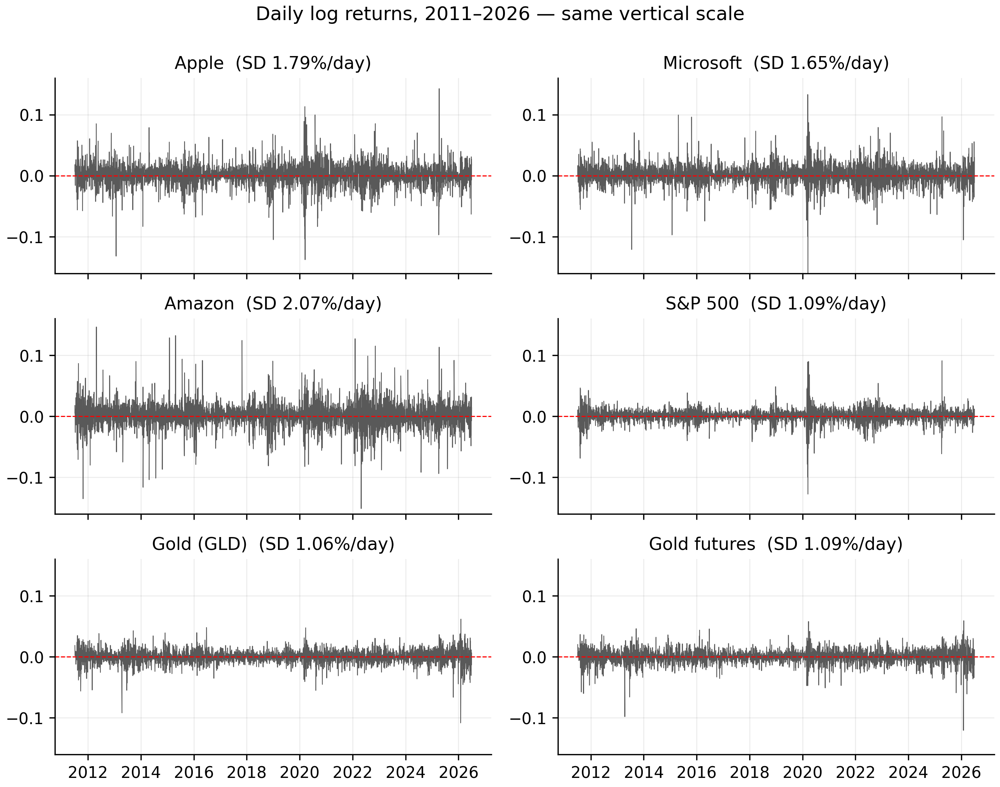
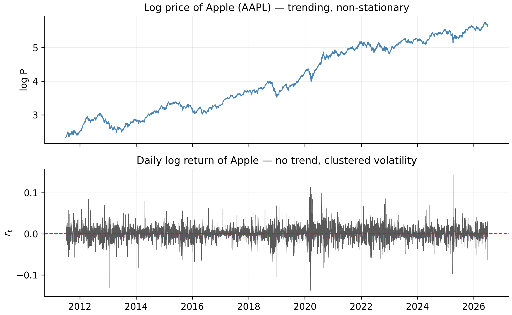

1 Asset Returns: Simple and Log
Most studies of financial time series work with returns rather than prices. Tsay (Tsay 2010) opens his book with the same choice, and gives two reasons: first, a return is a complete and scale-free summary of an investment opportunity — you do not need to know how many dollars were invested to interpret it; second, return series have much nicer statistical properties than price series, which is exactly what our models will need.
This chapter defines the two return concepts we use everywhere — simple returns and log returns — shows how they differ on our real data, and makes precise why the switch from prices to returns matters for everything that follows.
Throughout, each code block has an R and a Python tab — click to switch. The code is there for you to copy and run on your own machine; in the text we report the results as clear numbers and tables, not raw console output, so the insight stays front and centre.
1.1 From prices to returns
Let \(P_t\) denote the (adjusted) closing price of an asset at the end of day \(t\). The price itself answers “how much is one share worth?”, but it is a poor unit for analysis: Apple’s adjusted price climbs from about $10 to about $315 over our sample, while the S&P 500 index sits in the thousands. The two live on completely different scales and cannot be compared directly. A return normalises this away by asking a scale-free question: by what fraction did the investment grow from one day to the next?
1.2 Simple returns
A simple net return is the fraction by which an investment grows from one day to the next — exactly what happens to a dollar you put in.
The one-period simple net return on day \(t\) is the fractional change in price,
\[ R_t = \frac{P_t - P_{t-1}}{P_{t-1}} = \frac{P_t}{P_{t-1}} - 1 . \tag{1.1}\]
The quantity \(1 + R_t = P_t / P_{t-1}\) is the gross return — the factor by which one dollar grows in a day. If \(R_t = 0.02\) the price rose 2%, and one dollar became $1.02.
Simple returns are the honest description of what happens to your money, and they have one property that is easy to state and easy to forget: they compound multiplicatively across time, not additively. Holding the asset for \(k\) days turns one dollar into the product of the daily gross returns,
\[ 1 + R_t(k) = \frac{P_t}{P_{t-k}} = \prod_{j=0}^{k-1}\bigl(1 + R_{t-j}\bigr). \tag{1.2}\]
So the \(k\)-day return is not the sum of the daily returns. This is why you cannot simply add up daily percentage changes to get a monthly figure — a recurring source of error, and the single most practical reason log returns exist.
1.3 Log returns
A log return is the natural logarithm of the gross return, \(r_t = \ln(1+R_t)\). It is the workhorse of this book because it adds across time and is symmetric in gains and losses.
The continuously compounded or log return is the natural logarithm of the gross return,
\[ \begin{aligned} r_t &= \ln\!\bigl(1 + R_t\bigr) = \ln\frac{P_t}{P_{t-1}} \\ &= \ln P_t - \ln P_{t-1}. \end{aligned} \tag{1.3}\]
Writing \(p_t = \ln P_t\) for the log price, a log return is simply the first difference of the log price, \(r_t = p_t - p_{t-1}\). This tiny reformulation buys three properties that we will use constantly.
1. Log returns add up across time. Because logs turn products into sums, the awkward product in Equation 1.2 collapses into a clean sum:
\[ r_t(k) = \ln\frac{P_t}{P_{t-k}} = \sum_{j=0}^{k-1} r_{t-j}. \tag{1.4}\]
The \(k\)-day log return is exactly the sum of the daily log returns. Temporal aggregation — daily to weekly, weekly to monthly — becomes addition, and multi-step forecasts of cumulative returns become sums of one-step forecasts. We rely on this directly when we forecast over the July holdout in a later chapter.
2. Log returns are approximately equal to simple returns when moves are small. A first-order Taylor expansion of Equation 1.3 gives
\[ r_t = \ln(1 + R_t) \approx R_t - \tfrac{1}{2} R_t^2 + \cdots \tag{1.5}\]
so for the small daily moves typical of liquid markets the two are almost identical. They diverge only when \(|R_t|\) is large — precisely on crash and spike days, as we verify below.
3. Log returns are more symmetric and better behaved in the tails. A simple return is bounded below by \(-100\%\) (a stock cannot lose more than its value under limited liability), so \(R_t \in [-1, \infty)\) — an asymmetric, one-sided range. The log return \(r_t \in (-\infty, \infty)\) is symmetric around zero, which is what makes symmetric distributions a reasonable starting assumption for \(r_t\) (an assumption we later test and relax).
Computing both return series is a one-liner in either language:
aapl <- read.csv("data/AAPL.csv")
aapl$Date <- as.Date(aapl$Date)
P <- aapl$Adjusted
R_simple <- P / c(NA, head(P, -1)) - 1 # simple return (eq-simple)
r_log <- c(NA, diff(log(P))) # log return (eq-log)import pandas as pd, numpy as np
aapl = pd.read_csv("data/AAPL.csv", parse_dates=["Date"])
P = aapl["Adjusted"]
R_simple = P / P.shift(1) - 1 # simple return (eq-simple)
r_log = np.log(P).diff() # log return (eq-log)On the first few trading days of our sample, the two definitions are visually indistinguishable — the log return is just a hair smaller than the simple return:
| Date | Adjusted price | Simple \(R_t\) | Log \(r_t\) |
|---|---|---|---|
| 2011-07-01 | 10.2756 | — | — |
| 2011-07-05 | 10.4603 | 1.7975% | 1.7815% |
| 2011-07-06 | 10.5301 | 0.6668% | 0.6646% |
| 2011-07-07 | 10.6929 | 1.5465% | 1.5347% |
| 2011-07-08 | 10.7681 | 0.7027% | 0.7002% |
1.4 How different are they, really?
On our data the two definitions are numerically almost interchangeable on a typical day, and visibly different on extreme days. The code below computes, for each series, the mean and standard deviation of daily simple returns, the worst and best single days, and the largest absolute gap \(|R_t - r_t|\) over the whole sample.
symbols <- c("AAPL","MSFT","AMZN","SPX","GLD","GCF")
describe_one <- function(sym) {
P <- read.csv(sprintf("data/%s.csv", sym))$Adjusted
Rs <- P / c(NA, head(P, -1)) - 1
rl <- c(NA, diff(log(P)))
data.frame(Series = sym,
Mean = mean(Rs, na.rm = TRUE),
SD = sd(Rs, na.rm = TRUE),
Min = min(Rs, na.rm = TRUE),
Max = max(Rs, na.rm = TRUE),
MaxGap = max(abs(Rs - rl), na.rm = TRUE))
}
do.call(rbind, lapply(symbols, describe_one))symbols = ["AAPL","MSFT","AMZN","SPX","GLD","GCF"]
def describe_one(sym):
P = pd.read_csv(f"data/{sym}.csv")["Adjusted"]
Rs = P / P.shift(1) - 1
rl = np.log(P).diff()
return dict(Series=sym, Mean=Rs.mean(), SD=Rs.std(),
Min=Rs.min(), Max=Rs.max(), MaxGap=(Rs-rl).abs().max())
pd.DataFrame([describe_one(s) for s in symbols])The estimated numbers:
| Series | Mean (daily) | SD (daily) | Worst day | Best day | Max |simple − log| | Gap date |
|---|---|---|---|---|---|---|
| AAPL | 0.107% | 1.79% | −12.9% | +15.3% | 1.067% | 2025-04-09 |
| MSFT | 0.092% | 1.65% | −14.7% | +14.2% | 1.206% | 2020-03-16 |
| AMZN | 0.105% | 2.07% | −14.0% | +15.7% | 1.123% | 2012-04-27 |
| SPX | 0.052% | 1.09% | −12.0% | +9.5% | 0.781% | 2020-03-16 |
| GLD | 0.031% | 1.05% | −10.3% | +6.4% | 0.567% | 2026-01-30 |
| GCF | 0.034% | 1.09% | −11.4% | +6.1% | 0.699% | 2026-01-30 |
Three things in Table 1.2 are worth pausing on.
First, the daily means are tiny relative to the daily standard deviations. Apple returns about \(0.11\%\) per day on average with a standard deviation of about \(1.8\%\) — the “signal” is dwarfed by the “noise” by more than a factor of ten. This is the numerical face of a theme we develop throughout: the level of returns is very hard to predict, while their volatility is not.
Second, the worst days cluster where you would expect. The S&P 500’s minimum one-day return of roughly \(-12\%\) lands on 2020-03-16, the COVID crash; the largest simple-vs-log gaps for MSFT and SPX fall on that same date. Gold (GLD, GCF) has a noticeably narrower range than the equities — an early hint that gold’s risk profile is genuinely different.
Third, the gap between simple and log returns is negligible until it isn’t. For all six series the maximum gap over fifteen years is around one percentage point, and it occurs only on the single most violent day. This justifies the convention we adopt from here on: we model log returns, and read them as approximate percentage changes.
1.4.1 The six series side by side
Because returns are scale-free, we can finally put all six instruments on one common axis — impossible with prices. Figure 1.1 plots every daily log-return series on the same vertical scale.

symbols <- c("AAPL","MSFT","AMZN","SPX","GLD","GCF")
op <- par(mfrow = c(3, 2), mar = c(2, 4, 2, 1))
for (sym in symbols) {
d <- read.csv(sprintf("data/%s.csv", sym)); d$Date <- as.Date(d$Date)
r <- c(NA, diff(log(d$Adjusted)))
plot(d$Date, r, type = "l", col = "grey30", ylim = c(-0.16, 0.16),
xlab = "", ylab = "r_t", main = sym); abline(h = 0, col = "red", lty = 2)
}
par(op)import matplotlib.pyplot as plt
symbols = ["AAPL","MSFT","AMZN","SPX","GLD","GCF"]
fig, ax = plt.subplots(3, 2, figsize=(9, 7), sharex=True)
for a, sym in zip(ax.ravel(), symbols):
d = pd.read_csv(f"data/{sym}.csv", parse_dates=["Date"]).set_index("Date")
np.log(d["Adjusted"]).diff().plot(ax=a, lw=0.4, color="0.35")
a.set_ylim(-0.16, 0.16); a.axhline(0, color="red", ls="--"); a.set_title(sym)
plt.tight_layout(); plt.show()Two contrasts jump out and recur throughout our analysis. First, the equities are noticeably more volatile than gold: Amazon’s daily standard deviation is \(2.07\%\) and Apple’s \(1.79\%\), versus about \(1.05\%\) for both gold series — gold’s panel visibly hugs the zero line. Second, volatility clustering is universal: the 2020 COVID burst is the loudest event in every panel, and calm and turbulent stretches alternate everywhere. That shared feature is what the GARCH models will exploit; the differing amplitudes are why each series needs its own fitted parameters, not one set for all.
1.4.2 Additivity and the compounding trap
The additivity in Equation 1.4 is a correctness guarantee. The daily log returns of Apple sum exactly to the total log return over the sample, whereas naively summing the daily simple returns gives a badly wrong total.
P <- read.csv("data/AAPL.csv")$Adjusted
sum(diff(log(P))) # sum of daily log returns
log(tail(P, 1) / head(P, 1)) # log(P_last / P_first) -> identical
sum(P / c(NA, head(P, -1)) - 1, na.rm = TRUE) # summing simple returns: WRONG
tail(P, 1) / head(P, 1) - 1 # true total simple returnP = pd.read_csv("data/AAPL.csv")["Adjusted"]
np.log(P).diff().sum() # sum of daily log returns
np.log(P.iloc[-1] / P.iloc[0]) # log(P_last / P_first) -> identical
(P / P.shift(1) - 1).sum() # summing simple returns: WRONG
P.iloc[-1] / P.iloc[0] - 1 # true total simple returnFor Apple over the full sample: the daily log returns sum to 3.4238, exactly equal to \(\ln(P_{\text{last}}/P_{\text{first}}) = 3.4238\). Exponentiating recovers a gross return of about 30.7× — Apple roughly thirty-folded on an adjusted basis, a total simple return near 2,969%. Naively adding the daily simple returns instead gives only about 4.03 (≈403%) — wrong by nearly an order of magnitude, because it ignores compounding.
A cleaner illustration of the same asymmetry: a \(+50\%\) day followed by a \(-50\%\) day does not get you back to par. In simple terms you end at \(1.5 \times 0.5 = 0.75\), a \(-25\%\) loss; in log terms the moves are \(\ln 1.5 = 0.405\) and \(\ln 0.5 = -0.693\), summing to \(-0.288\) — the same \(-25\%\) (\(e^{-0.288}-1 \approx -0.25\)), but expressed additively.
1.5 Why returns beat prices
The scale argument in Section 1.1 is the intuitive reason to prefer returns. The deeper reason is statistical, and it is why our modelling and forecasting toolkit is even possible.
Almost every model we use — the autocorrelation and ARMA machinery, the GARCH volatility models — assumes the series is weakly stationary: its mean, variance, and autocovariances do not drift over time.
Prices flagrantly violate this. A price series wanders like a random walk — it trends, has no fixed mean, and its variance grows without bound. Returns, by contrast, fluctuate around a small, roughly constant mean with a stable spread. Differencing the log price (exactly what Equation 1.3 does) turns a non-stationary price into a stationary return.
Figure 1.2 makes the contrast visible. The top panel is Apple’s log price — a trending, non-stationary line. The bottom panel is its log return — no trend, hovering around zero, but with conspicuous bursts of volatility (the 2020 COVID crash above all). That clustering of calm and stormy periods is volatility clustering, the empirical fact that motivates the GARCH stage of our forecasting toolkit (Cont 2001).

The code that produces this figure:
aapl <- read.csv("data/AAPL.csv"); aapl$Date <- as.Date(aapl$Date)
lp <- log(aapl$Adjusted); rl <- c(NA, diff(lp))
op <- par(mfrow = c(2, 1), mar = c(3, 4, 2, 1))
plot(aapl$Date, lp, type = "l", col = "steelblue",
xlab = "", ylab = "log P", main = "Log price of Apple (AAPL)")
plot(aapl$Date, rl, type = "l", col = "grey30",
xlab = "", ylab = "r_t", main = "Daily log return of Apple")
abline(h = 0, col = "red", lty = 2)
par(op)import matplotlib.pyplot as plt
aapl = pd.read_csv("data/AAPL.csv", parse_dates=["Date"]).set_index("Date")
lp = np.log(aapl["Adjusted"])
fig, ax = plt.subplots(2, 1, figsize=(8, 5), sharex=True)
lp.plot(ax=ax[0], color="steelblue", title="Log price of Apple (AAPL)")
lp.diff().plot(ax=ax[1], color="0.3", title="Daily log return of Apple")
ax[1].axhline(0, color="red", ls="--")
plt.tight_layout(); plt.show()We can put a formal number on “non-stationary” with an Augmented Dickey–Fuller (ADF) test, whose null hypothesis is a unit root (non-stationarity). We only preview it here; the full treatment is in Chapter 6.
library(tseries)
P <- read.csv("data/AAPL.csv")$Adjusted
adf.test(log(P)) # ADF on the log PRICE
adf.test(diff(log(P))) # ADF on the log RETURNfrom statsmodels.tsa.stattools import adfuller
P = pd.read_csv("data/AAPL.csv")["Adjusted"]
adfuller(np.log(P)) # ADF on the log PRICE
adfuller(np.log(P).diff().dropna()) # ADF on the log RETURNOn Apple’s log price, ADF returns a large \(p\)-value (about 0.3) — it fails to reject a unit root, so the price is statistically a non-stationary random walk. On the log return, ADF returns a \(p\)-value at the floor of the test (0.01) — a decisive rejection, so the return is stationary. This is the formal license to build models on returns, not prices. (Unit-root tests are subtler than one clean example suggests — the S&P 500’s price is a borderline case we dissect in Chapter 6.)
1.6 How this chapter feeds the toolkit
Because we model log returns, every series we feed into a later model is approximately stationary — the precondition the ARMA and GARCH models require. The observation that the daily mean is tiny next to the daily standard deviation is why our forecasts will be modest for the level of returns and substantial for their volatility. The additivity of log returns (Equation 1.4) turns one-step forecasts into coherent multi-step forecasts over the July holdout. The volatility clustering in Figure 1.2 motivates the volatility-modelling stage of the toolkit. And gold’s narrower range foreshadows the point where an asymmetric volatility model essential for the stocks proves unnecessary for gold.
- A simple return \(R_t = P_t/P_{t-1} - 1\) compounds multiplicatively (Equation 1.2); a log return \(r_t = \ln(P_t/P_{t-1})\) adds across time (Equation 1.4), is \(\approx R_t\) for small moves, and is symmetric.
- On our data the two agree to a few thousandths of a percent on ordinary days and gap by about a percentage point only on the most extreme day.
- Prices are non-stationary; returns are stationary — the statistical reason every model that follows is built on returns.
- Always compute returns from the adjusted close, and model log returns.